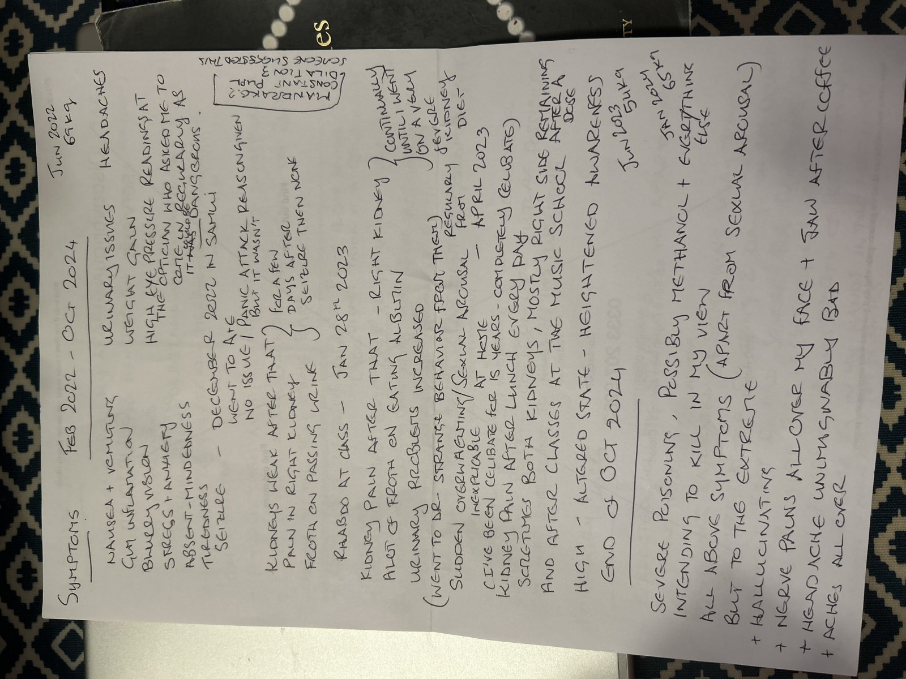
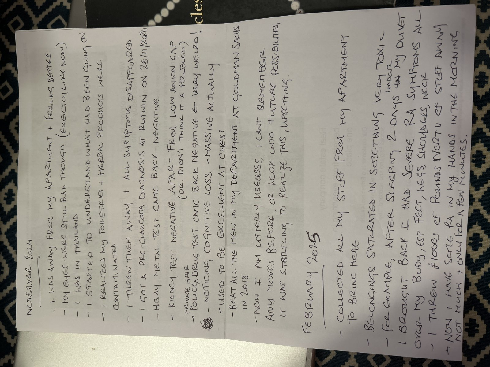
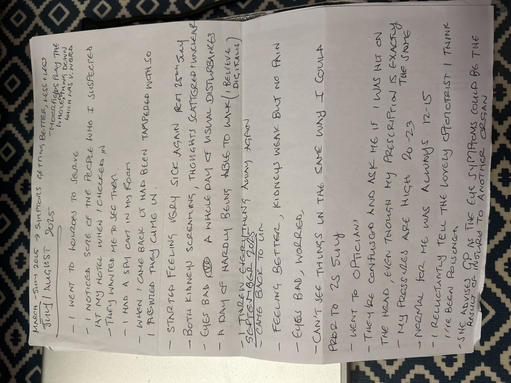

September 2025¶
Israel TT¶
- It’s module 3, the final module of the series in Israel.
- I’m assisting Steve alone; Mrs Wasserman was not able to attend.
Jonathan tells me he has the shingles virus¶
- It’s the first day and everyone’s arriving, saying hi, and setting up.
- Jonathan, Mrs Wasserman’s nephew, has just arrived.
- Out of the blue, and totally out of context, Jonathan tells me he has the shingles virus.
- I’m not sure what to say to him, so I tell him I heard it was really painful.
- (I get cold sores, which is the same, but I didn’t mention it).
- I’m certain at the time - and after the constant signals in May with the same theme that he’s saying this with regards to offering himself as a sperm donor at some later date when everything’s calmed down and we can all speak plainly.
- In September 2026, I realize he probably should have known that any egg of mine could very well have been adversely affected by multiple deadly substances I was ingesting or absorbing on a regular basis.
- In fact, they all knew this was going on for me - they’d even ordered it themselves at Lourdes.
- How could they all be so stupid?
You’re mine¶
- I hear this constantly while assisting on the TT course.
- I like it.
- I’m not sure where it’s coming from, but I sense it’s a good place.
- I tell my hacker friends I’m hearing this when I get back to my room.
- They don’t believe me.
- The most marvelous irony about this is that everyone thought they owned me; but only God owns me.
- They use the Isaiah quote related to this constantly online from that moment.
- In July 2026 in Bali, it’s intense how much they use this reference - the words popped up on the (switcheroo’ed) taxi driver’s screen on the way to the course even - as I start to realize they’re not Israel they’re America, and they think they themselves own me and that God doesn’t matter.
Dinner with Steve¶
- We have dinner just outside Zion Gate near the city walls; we go twice to this restaurant the lamb was so good.
- Of course, every time we go there are American agents sitting close by.
- I tell Steve about how they got me again referring to the Lopez Cano’s recent poisoning attempt at Lourdes.
- Steve does not react like a normal person who is hearing information that people are trying to murder their friend.
- He doesn’t say anything at all, in fact.
- I tell him I’m writing it all down, and I can give him the link to this police statement.
- He says: nooooooo, in a mock scared tone which I find extraordinary!
- He then starts telling me that he has treated some gypsy families in the past, and how the men sit around all day drinking: that’s all they do, Katharine, he said.
Elvis Presley¶
- As usual, I suffer from severe constipation while anywhere near the mousses and/or in their clutches.
- Steve mentions how Elvis Presley died of a heart attack from straining due to his chronic constipation one morning, out of the blue, out of context.
- I had been straining, a lot, that morning.
- It made me wonder.
13th Day of Elul, Saturday 6th September¶
- It is the last day of my trip to Israel.
- Steve tried to get me to leave Jerusalem with him earlier in the day but I declined.
- I like it here, I told him.
- Later that night, I see a quote about software being God’s business too; from the Rebbe - said on the very same day but years before.
The ultimate purpose of technology
Parenthetically, the ultimate purpose of technology is that it be used for holy matters, as stated: All that the Holy One blessed be He created in this world was solely for His glory, and The only glory is Torah. Thus we see that modern technology is to be used for increasing in the dissemination of Torah.
Although it is possible to utilize it for worldly matters (and even things antithetical to sanctity), this is only because man is given free choice. Indeed, when others use technology for undesirable purposes, Jews must rectify this by using it for holy purposes; and then the sanctity produced is that much greater, coming as it does from previous darkness.
Ref: https://www.chabad.org/therebbe/article_cdo/aid/2537558/jewish/13th-Day-of-Elul-5742-1982.htm
- This talk feels like it is describing the forgivenet.
- When there is no reasoning with arrogance and evil, what can you do?
- Maybe just supply the means for healing and make them available, and leave the rest to God.
Morya wants me to hold Ruth¶
- She’s very keen I hold Ruth, I’m delighted to, I love babies.
- Except, my feelings aren’t normal as I hold her.
- I feel emptiness, desolation.
- It’s strange. I note it.
- Morya says: she likes you.
- I think Ruth came from one of my eggs they stole in Bali while I was being mass raped.
The Red Lion in High Barnet with dad¶
- Since I got back in February, dad insisted we went regularly to the Red Lion in High Barnet for the carvery.
- I usually paid, of course.
- I started to realize something fishy was going on up there pretty much immediately.
- Every time I took him up for the carvery dinner, some weird event occurred.
- For example: the Islamicist display at the table right next to us in March.
- Or the woman who seems to know me, and dad, in July.
- He wants to go again.
- I don’t like going but I take him because he wants to go; I mean, it’s OK, apart from the weird events, but it’s way too much food for me.
- Anyway, off we go and park close to the pub.
- We are walking from the car to the pub.
- In a disastrous error of judgment, for him, dad suddenly needs a wee.
- He stands in the middle of the pavement, in broad daylight, and pisses on the Red Lion pub’s wall.
- He even waggles his penis and sprays the urine up and down.
- He does something even more despicable too. He pulls back his foreskin and it appears he even has an erection while he’s pissing up the wall of the Red Lion.
- I’m really embarrassed.
- I stand aside and sort of put my head in my hand.
- While he’s doing this, a fast, red expensive car speeds up to us noisily, engine growling and screeching.
- It stops, the driver and passenger look at us for a few moments, then it reverses away and drives off.
Thoughts on this
- He’s saying “up yours” to the pornographers, for events he hasn’t understood very well.
- It’s disgusting, I don’t think I’ve ever been so disgusted with someone.
- A level down, even though in some way he’s happy I’m alive, the constant remains: his daughter is not human nor deserves basic human rights.
- Repentance - his statement - is the only thing that can save him.
- I hope they got the whole thing on film, please God.
- While we’re in the carvery, I see men peering in the window to look at us.
- Our presence is clearly antagonizing.
- I tell dad we have to stop coming here, I don’t want to antagonize anyone.
- After finding out that my dad is likely horribly connected with these people and the porn-gangs of Dénia, and that the woman at the Red Lion probably told him to stay away from Lourdes while they finished me off, and I was not finished off; this act, to me, is even more appalling than it already was.
- And he still let them feed him.
Reform UK conference¶
- I attended the Reform UK conference early this month.
- Agents everywhere; in the next room at the hotel, wherever I go. This is becoming the norm for me now.
- This was when I really noticed I could not at all look at bright lights - except that’s a symptom I get when I’m poisoned, so I wonder if I was poisoned again at the hotel maybe.
- Sedated surgery too?
- I’d be in the audience, watching the show and listening to the speakers, and in between each person the lights would roll around the conference hall and I literally had to cover my eyes and close them till it was finished.
- I don’t think this is an every day thing for me, so I’m wondering what happened there.
- I was reminded of the first time I went to the optician about this weird and inexplicable reaction to light, probably sometime in 2013 which suggests poisoning at my apartment in Ricardo Ortega.
Stalked by weirdo men trying to upset me¶
- A couple of men approach me in the queue on the first morning I’m there.
- One of them is Mr Lucas with a badge saying he’s from Hastings or somewhere around there, and his mate is a Pakistani man (he eventually tells me) whose name I forget.
- I thought they looked very similar, like brothers in fact and I told them that but they weren’t.
- Mrs Lucas is going on, 100 miles an hour, about how sexually depraved women are - so and so with their knickers off, this that and the other. It was vile. He sounded like he was on drugs.
- I think I was supposed to freak out when the mate told me he was Pakistani.
- I said to the Pakistani mate that I think his friend’s been on drugs all night and not come down yet.
- And there were a couple of tall white men standing around us, watching all this, and they reminded me of policemen.
- So that was going on too, as well as the MP standing up and snickering about his favorite porn genre.
- I talk about that in the April 2025 section.
- They really think porn is normal and healthy don’t they; precious enough to murder to protect?
Current health¶
Eyes¶
- My eyes remain blurry and painful since July’s poison attack and I’m having a lot of headaches.
- I can feel my eye pressure is high.
- I go in for a reading to Vision Express in Tesco’s Colney Hatch Lane and indeed my eye pressure is high.
- I’m worried about sudden onset glaucoma after the diagnosis of PACS from Rutnin last November.
- Moorfields has not got back to me since I noticed severe deterioration in my left peripheral and asked for help.
- I book an eye test at Colney Hatch on 17th September.
- I explain I’m concerned about glaucoma.
- The optometrists ask me if I have been hit on the head.
- My sight prescription has not changed at all; even the peripheral test is OK.
- I don’t understand it and ask to speak to the optometrist in private.
- I tell the optometrist Zoha Hemraj I think I have been poisoned.
- She’s shocked but it seems like my situation and narrow angles make more sense to her now.
- She tells me she is going to nudge Moorfields for further investigation and I should expect to hear from them.
- She also advises I tell my GP.
- I’m reluctant but I make an appointment in any case.
Rutland House Surgery Muswell Hill¶
- On 18th September I visit my GP.
- I speak to Dr Shirshana Davis.
- I tell her I believe I was poisoned; low level and continuously over years at my apartment, and then twice maliciously with the intent to kill at the end of October 2024 and about a month before in France in July this year.
- I also tell her that all my stuff was toxic when I brought it home from France in February this year as if it had been doused in pesticides or similar and it made me very unwell until I chucked it out or washed it multiple times.
- I write a timeline of symptoms for her as it is so much to explain.



- The only thing I missed on here was the snapped rib which happened three times and I believe due to weakened bone mass by poisoning.
- Also, the fact that since the PACS diagnosis, I have had to stop practicing inversions in yoga, something I have been doing without issue since 2000.
- Also, a skin lesion on my nose which appeared while living at Carrer Furs and I believe due to using toxic substances on my skin and standing under the shower in the morning where poisons in the water will have accumulated. Hackers mentioned this online to make sure I knew I was being watched. I looked at this lesion a lot in the mirror.
- I also give her the PACS diagnosis and kidney check result from BKK.
- She listens and hears me.
- She suggests immediately the mental health team.
- I explain that I have no more PTSD at all and that my suicidal depression is completely healed and I have no depression at all either.
- I explain that something happened to me while I was fighting for my life in Dénia in 2023 that unleashed an inner strength I never knew I had.
- I tell her about my Transformational Touch work with Steve Terrell and how much it has helped me heal from trauma.
- I also explain that I have asked numerous agencies; police, embassies, etc, for help and I have been ignored by everyone.
- I tell her I do not feel safe in North London due to this.
{kind=link}
{kind=link}
Tip
- RA symptoms in my hands come and go, I believe it is due to the car being toxic.
- I expect a good detox will eliminate this, along with a better environment.
- She tells me to give my notes to the receptionist who will scan them into my file.
- I do that.
- As the receptionist is scanning my notes in, she suddenly remarks, “Oh, that’s weird, the scanner’s not working!”
- Her tone sounds like the scanner always works.
- I’m unsurprised at this development.
- I ask her to please get these notes into my file in any way she can.
- She photocopies them and tells me she’ll do it later.
Yet another weird woman¶
- Tiringly, another weird woman is sent to make sure I know my movements are still being watched by UK criminal porn-gangs.
- She is about the same age as me, a bit overweight, black hair, pale skin, short like me.
- She arrives just after I arrive for my appointment and sits in the waiting room.
- She does that talking about nothing thing which is supposed to make them look normal but is totally phoney.
- She states her appointment is not for another hour-and-a-half but thought she’d come anyway because she’s feeling anxious.
- She quickly launches into a fake speech about nothing; the way they do.
- I sense darker intentions.
- I wonder if this is Verity’s weird roommate?
- I stand up tall and straight and bang my massive English Heritage umbrella on the ground loudly.
- She shuts up and puts her head down.
- That’s true. I couldn’t believe it.
Aunty Paddy pops a note through the door¶
- Paddy, dad’s sister, Leah’s mum, sends a little handwritten note to mum and dad.
- In it, she basically says, and very extraneously, Leah’s boyfriend Chris is a wrong un.
- I knew this already and they’d already offered him up in October 2024, except I lost the pic when they rendered my machine unaccessible.
- I wonder if Paddy is instructed to say this.
- The last few times I saw her, sporadically, like once every five years maybe, she always has something to say to me and the energy of it is always shaming, somehow.
- I wonder about her.
Dublin Transforming Touch therapy with Steve¶
- I travel to Dublin for trauma therapy, Transforming Touch with Steven Terrell.
- It’s module one of a new cohort.
- All the participants are agents this time, and they’ve started to be really obvious about it too.
- I suspect it’s because of my survival of yet another poisoning attempt at Lourdes.
- Every time there’s an attempt, and I survive, the number of agents stalking me increases.
- The numbers became overwhelming in June 2026 after Tibet where I suspect they used the most poisonous poisons ever known!
- A German woman on the course even calls me Saint Katharine when she first meets me in a sort of point-at-the-freak type manner.
- One of the men - Mica - makes an extremely dodgy romantic move on me which he seemed tremendously embarrassed about the next time I saw him in April 2026.
- He just friended me on Facebook; he’s another actor.
- An excessively pro-Palestine woman sits next to me, and gives me bear hugs every time she sees me.
- I feel very exposed, and not in a good way.
- I’m starting to get clear about these people’s budget for “me” which has become literally in the millions; but they won’t lift a finger to actually help me personally, to ensure my safety, to help me out with healthcare, to tell me what’s going on, nothing!
- The inconsistency is disturbing and much like the activity of the porn-gangs of Dénia if not exactly the same but with a different end goal.
- At this stage, I’m still trying to figure out what these people’s end goal actually is.
- Do they want me to be a spy? Is that it?
- I struggle to understand why they would treat me so badly if they wanted to own me. It doesn’t make sense.
- In August 2026, God tells me everything.
- They were stealing my eggs and making babies with them, and then they were going to murder me.
Richard at Newgrange¶
- The day before the course starts, on Wednesday 24th September, I take Steve in my poisoned and toxic car to visit the Newgrange monuments; a place I love which I like to visit as much as I can when I’m in Ireland.
- On the way, I reiterate my concerns about the pedophile porn and baby-rape epidemic in Dénia and how it means there’s at least one whole generation of pre-verbal rape-trauma survivors in a small region of Spain.
- He says something like: I’m even getting upset now about it, and changes the subject.
- He tells me: the Jews look at a lot of porn Katharine. I tell him I’m sorry to hear it.
- (It’ll all be recorded).
- We arrive at the site. I notice the agents everywhere.
- As we’re walking up into the Knowth site on the tour, Steve tells me that the weirdest thing has just happened; one of the women on our tour looks exactly like someone who practices TT in the US.
- Seconds after he tells me this, after we pass through the small yet significant constructions around the main mound, I see someone I recognize.

- It’s Richard, the man who popped up in Glastonbury way back in 2005 just after I had received the Lockerbie compensation and the porn fatwa had begun in earnest.
- The man who had been tasked with stalking me by North London criminal gangs.
- I’m so startled; I’m staring right at him.
- It’s his profile, exactly.
- He’s the right age, about 60.
- Same height, same build.
- Everything about the man is Richard, except when I look at him head-on, his face is rounder - cotton wool in the gums maybe.
- I also think that could happen over the years.
- But then I hear him talk.
- He has a wild Irish accent and it throws me completely off guard; too wild perhaps though.
- Richard, although apparently Welsh, had spoken the King’s English, well.
- He is with a couple of German people, a man and a woman.
- I can’t figure it out. We see him hugging them from time to time. They’re quite intimate with each other.
- The three are always deep in conversation.
- From what I can tell, he seems to be telling them about the myths and legends of the place, as if he knows more than the official guide.
- I wonder if he’s working as a surreptitious guide.
- In the queue at the cafeteria, he is right in front of us.
- It could be Richard, apart from the accent. Could he be putting it on?
- I ask him; “Are you a guide?”
- He looks at me and starts to appear nervous.
- He says, grinning, “No, I’m not a guide, I just like talking a lot.”
- It’s Richard.
- They’ve done this countless times with protagonists in this police statement and in August 2026 I know why.
- They’ve been distracting me endlessly, pretending they’re investigating crimes, to keep me from thinking about the inconsistencies in their behavior.
- They have shown ZERO interest in my health and wellbeing, and obviously couldn’t care less if I died, and perhaps would find this preferable to my continued survival.
- My life has been like this since after the poisoning attempt in July 2025 - as if one criminal gang replaced the other - but the new one had millions to spend and has power over the bonafide criminals I am describing here, and can cart them round the world at the drop of a hat to show me to make me believe they give a shit, when they obviously don’t.
We talk about the forgivenet, the Golden Rule, and the disciples¶
- I want to know if Steve has a strong connection with any of the disciples.
- The reason I ask this is because just after being poisoned, and while I was on a hike up to the auberge Oulettes at the mountain, I had a really strange sensation of being cut in half.
- I also felt like God was as close to me as He could possibly be, so I was thinking the feeling might be biblical in nature.
- When I got back to my holiday let in Cauterets, I looked up if any of the disciples had been cut in half, and indeed one of them is said to have been, Simon the Zealot.
- So I wondered if Steve had had any similar thoughts.
- He said immediately, Peter.
- Of course it is!
- Later, I found out Isaiah was also cut in half.
- We’ve been so horribly violent with each other for so long haven’t we.
- We also spoke about the forgivenet and the Golden Rule and I explained the app is rock-solid on Golden Rule.
- This is important to Steve, but I wondered if he realizes how most of what everyone in the world - including him - thinks and believes comes from anti-Golden Rule manipulation techniques.
- I often try to talk about these things with Steve, but something often blocks me.
Whitefriars Church¶
- After we return to Dublin in my toxic vehicle, Steve and I go for a walk in Dublin.
- Steve had told me he was drawn to visit Whitefriars Church the day before and was surprised to find relics of St Valentine there.
- I had found this information triggering for some reason, and quietly vowed to visit myself on the 29th September, my one free morning after the course ends and I head home, incidentally Saint Michael’s feast day.
- It turned out Steve and I ended up there on our walk anyway.
- To my surprise, I found that the statue of St Valentine reminded me of the trumpet teacher; but I could look straight at him - not in glances like the animal-training they had subjected me to under sedation so that I would only be able to look at the seven devils in glances, and they could therefore easily add a horse into the mix at the stage they were ready to finish me off.
- At Whitefriars, I was still under the impression that there was only one trumpet teacher, not eight.
- As I stood looking at the statue of St Valentine, while having this powerful remembering of the Dénia conservatory trumpet teacher, I thought it was because the psychological attack had been so intense, I was triggered by the idea of romance… but there was something more.
- The statue looked, to me, like it was real; a real human being.
- At the time, it was so weird I didn’t understand it.
- I told Steve the statue reminded me of a real human; it’s a real human, I told him and went back to look again at it.
- A few days later, on the therapy table, I realized.
- Valentine reminded me of all the trumpet teachers in fact, but one of them way way more than all the others.
- There is, in fact, an uncanny resemblance.
- The statue in Whitefriars Church looks like the trumpet teacher who had cried in my arms in my bed in what I had thought was a dream but I am now certain it was not.
- On the 29th September, Michaelmas, I visit again, attend St Michael’s mass, and take some photos.


- In the last photo above, he appears to be crying.
Dinner with Adam¶
- I suggest to Adam we go for dinner and get the best Irish stew from the hotel round the corner that I think I’ve ever had!
- He agrees.
- We’re sitting over dinner and I start to share my story.
- He gets annoyed and asks me to shut up, he can’t handle it.
- I ask him about his life, what’s motivating him.
- He says he’s looking for a woman.
- I wish him luck.
St Michael’s mass on 29th September¶
- It feels to me like the end of Archangel Michael’s mission; the task he gave me in Lourdes in 2020.
- I write a note for Anthony in the church book beside the statue, and I leave a red Kotel thread in the page.
- Like the mandrake and hallucinogens - plants and substances which switcheroo-ed to work for God alone - Valentine stood behind and beside me, supporting me, on God’s side.
- Imagine him looking like that… it’s as if the story was written hundreds even thousands of years ago; drawing in sculptors, musicians, and filmmakers on the way. #GreatRay
- I keep a picture close to my heart, especially when I do my ACIM study, for months on end until they batter me psychologically so effectively online while I’m in Thailand in December, I decide to remove this section.
- That was a mistake; except it never is a mistake is it.
- The timing is always spot on.
Weddings at the church¶
- We leave Whitefriars, me a bit amazed, and Steve and I start walking again and end up at another church.
- Mass starts the moment we arrive.
- The mass time is wrong though; the one we’re at isn’t listed and it’s outside the normal mass times.
- It’s a special mass.
- A whole bunch of people are renewing their marriage vows, that’s the theme of the mass.
- There must have been at least twenty couples who stood up when the American priest asked who here would like to renew their vows?.
- It seems like a set up to me, a bit of a clunky one too.
- I’ve been followed round endlessly already, and this morning’s business at Newgrange was very purposeful.
- It’s funny because Steve thinks so too without telling me that or necessarily being aware of it.
- As we’re sitting in the pew watching the priests leave when the mass is over, he knows that one of them, the one at the front, doesn’t know which way he’s going, and off he goes in the wrong direction as if he’s never been in the church before in his life and one of the others has to race back to get him.
- Steve says, right before he does it, he doesn’t know where he’s going.
Healing process¶
- On the therapy table I have lain extremely still for the full five years I have been doing the practice; like a stone.
- In March this year, while doing shares in Jerusalem at Purim, I cried a little, and since then my therapy process changed.
- I started experiencing eye-twitching very slightly, and, as usual given I had no memory of anything else, I assumed this was coming from experiences in 1989.
- In June, on an intensive, this eye-twitching became more pronounced.
- On the course this month, the eye-twitching became quite extreme. It’s as if physical shocks are happening to the body and I’m registering it in the eyes alone.
- The changes also include fierce high-frequency head-shaking like I’m saying no repeatedly but can’t vocalize or move my body.
- I see this as confirmation of repeated sedated rape and attempted murder.
- Alongside this I must question my snapped right bottom rib that seems extremely weak, a left wrist injury I have no idea how could have occurred, a weak left hip, and who knows what else that I now believe is due to male body-weight forced on me while I was unconscious.
- I’m looking forward to more healing and peace.
- I guess I might remember a whole bunch of things now… (stated at the time of writing, check commit date).
- I remain assured whatever it is will be nothing I can’t handle.
Remembering a whole bunch of things
- Around a week after the course I remember four distinct men who acted as trumpet teacher at the conservatory during the switcheroo porn scam and how Gabriel Silva, my manager at Polygon, had used the word “switcheroo” in the process of trying to bully me out of my job in August 2024.
- I remember my father’s involvement with Domingo Lopez Cano from 2013 onwards.
- I remember my cousin Igor’s unusual interest in my “amazing” apartment at Ramon Ortega that my father had repeatedly and excitedly told him about, insisting he must bring his young family there to visit.
- I remember that, even though I had moved out of the apartment at Ramon Ortega, my cousin did bring his young family on their summer holiday to Dénia for a few weeks in 2014 not realizing I had moved, because my father never paid attention to what I was doing with my life.
- I mentioned this fact to dad, with horror; he becomes angry and says, I’d better speak to Igor in a tone that sounded like he was condemning me for something.
- Both my parents, at that moment, start going on about my previous interest in Haitian spiritual practices as if that will assure the world I’m not worth listening to.
- My aunt Patricia would also do that.
- Inma also did this in January just after we went to the police in Madrid to report poisoning and I was ignored.
- Why are they all so keen to silence me? What are they hiding?
- In late November, in Bangkok near Lupini Park, someone told me I would never, ever have to return to this hideous environment that has always sought to destroy me.
- I believed this - my pathological inability to see the bad in people and groups projecting goodness onto them.
- This was the online chatter I was being subjected to endlessly…, along with continuous prompts that I would be meeting my love the trumpet teacher every day, and that arrangements had been made for my safety once a week probably (the multiple collapsing bridges), at the time I was in a traumatized state from just having found out about my dad and so I believed it all, hung onto it even.
- All lies.
Shares in London with one of the agents¶
- I arrange to do shares in London with one of the course attendees. An agent.
- She lives in various flats housesitting while renting out her property on AirBnB.
- I meet her at a flat in Islington where she is looking after a cat she calls Peter Parker.
- I give her some TT.
- We’re considering her giving me some TT and then the cat starts coughing up a fur ball so we don’t bother.
- The cat likes me.
- I see her once again in another flat where she does give me some TT.
- On the shelf there is a giant book with the title Gisele.
- I find myself getting a stammer talking to her, as if my words are blocked.
- I do this with people in Bali too.
- I realize I do this all the time with people who are lying to me.
- It’s like their deception blocks my thinking if it’s not obvious.
- When lies are more obvious, it can feel like walking around a dark room at night and bumping into the furniture.
- Or maybe when that capacity is deadened for some reason (trauma reaction maybe), it shifts into a full communication block.